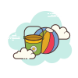

<ion-content>
  <div class="question_slider">
    <div class="container pink larger">
      <ion-slides #slides pager="false" [options]="slideOpts">
        <ion-slide>
          <h1>Vc tem experiência com criança?</h1>
          <div class="circle">
            <div></div>
            <div></div>
            <div></div>
            <div></div>
            <ion-avatar>
              
            </ion-avatar>
          </div>

          <ion-segment (ionChange)="segmentChanged($event)">
            <ion-segment-button value="friends">
              <ion-label>Sim</ion-label>
            </ion-segment-button>
            <ion-segment-button value="enemies">
              <ion-label>Não</ion-label>
            </ion-segment-button>
          </ion-segment>

        </ion-slide>
      </ion-slides>
    </div>
    <div class="container smaller">
      <ion-progress-bar value="0.45"></ion-progress-bar>

      <div class="padding">
        <div class="info">
          <div>
            <ion-icon name="bulb"></ion-icon>
          </div>
          <p class="animated fadeIn">
            Se voce gosta crianças poderá atual como Aupair ou Demipair nos EUA ou Australia.
          </p>
        </div>
        <ion-button
          size="large"
          expand="full"
          shape="round"
          color="roxotop"
          class="animated fadeIn"
          (click)="continue()"
          [disabled]="!genero"
        >
          <span>Continuar</span>
          <ion-spinner
            name="crescent"
            *ngIf="continuarLoading && !sucesso"
          ></ion-spinner>
          <ion-icon
            name="thumbs-up"
            *ngIf="sucesso"
            class="animated slideInUp"
          ></ion-icon>
        </ion-button>
      </div>
    </div>
  </div>
</ion-content>
